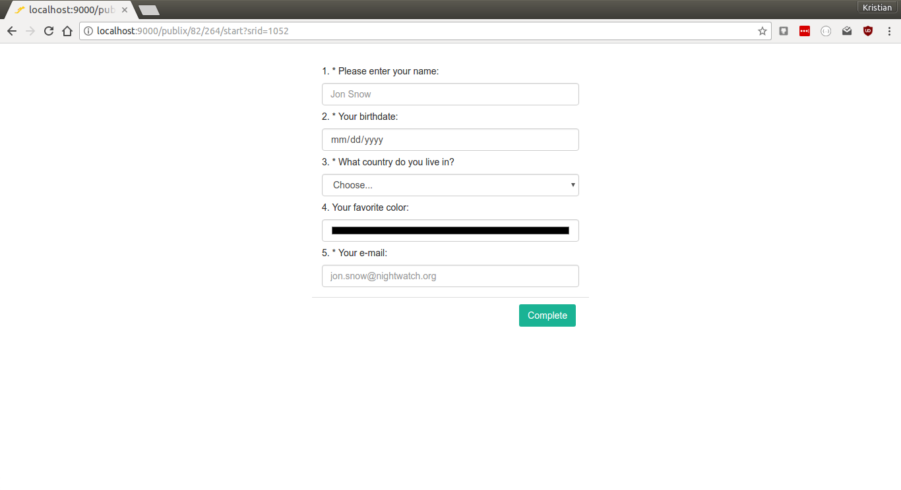
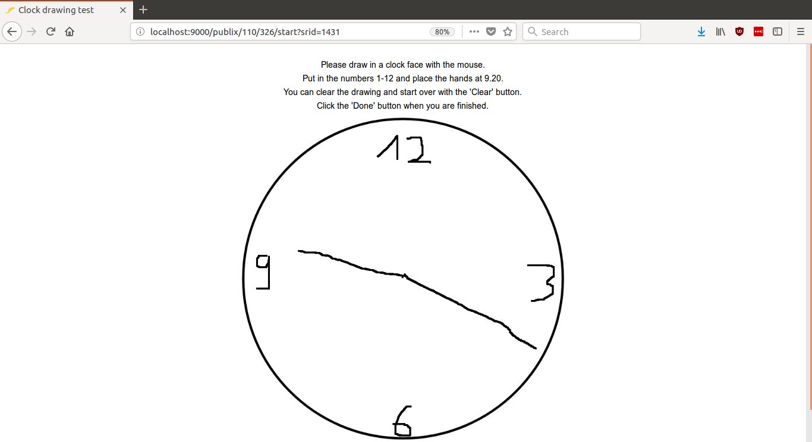

If you wrote an example study that you’d like to share, please feel free to contact us and we’ll include it in this page!
Since JATOS cares mostly for the server side it gives you the freedom to use in your study code whatever technologies work in browsers (e.g. HTML5 canvas, CSS3 or 3D graphics with WebGL). Additionally browser-side JavaScript libraries or frameworks like jQuery, AngularJS, Bootstrap, Highcharts, p5, or jsPsych are possible and will smooth out your path to quick and easy development. Of course the same is true for CSS modules (e.g. Pure.css, Material Design).
You can easily import/export study in JATOS. There is an ‘Import Study’ button in the header of each page and each study has an ‘Export Study’ button hidden under the ‘More’ button.
Another library of examples of psychological experiments is the Experiment Factory. All those experiments are easily jatosifyable - like we did with the Self Regulation Survey.
If you have trouble downloading a study (common in Safari browsers) check this troubleshooting tip.
Hello World Example
Everything starts with a Hello World!
Go- / No-Go Task (with jsPsych 6.0.4)
Standard Go- / No-Go experiment. This study illustrates the compatibility between JATOS and the excellent jsPsych library (www.jspsych.org). With jsPsych one can program the actual experiment while JATOS cares for the server-side.

Needs JATOS version 3.3.1 or newer
Go- / No-Go Task (with jsPsych 5.0.3)
Same experiment but with an older version of jsPsych (5.0.3).
Needs JATOS version 3.1.1 or newer
Randomize Conditions Between Participants
Template to randomly assign participants to conditions A, B, or C (with fixed numbers for each condition).

Needs JATOS version 3.3.1 or newer
Download Randomize Tasks Between Workers
Lexical Decision (with jsPsych 5.0.3)
Taken from http://www.factorsdb.org/ using jsPsych library (www.jspsych.org) > In a lexical decision task, participants classify whether a string of letters is a word or a nonword. This version is based on one of the earliest lexical decision tasks, reported in Rubenstein, Garfield, & Millikan, 1970. The experiment tests response time for high and low frequency English words.

Needs JATOS version 2.1.7 or newer
Random Dot Kinematogram (with jsPsych 5.0.3)
By Sivananda Rajananda, Hakwan Lau, Brian Odegaard (preprint)
Source code: github.com/vrsivananda/RDK
A random dot kinematogram (RDK) for online visual psychophysics and the use in web browsers.
This fully-customizable RDK offers options to implement several different types of noise (random position, random walk, random direction) and parameters to control aperture shape, coherence level, the number of dots, and many other features.

Needs JATOS version 3.1.1 or newer
Demographic and Survey questions (using SurveyJS library)
SurveyJS is an easy to use library to create simple forms or complex surveys and questionaires. Have a look at surveyjs.org/examples/jquery/questiontype-text to see what is possible.

Needs JATOS version 3.1.1 or newer
jQuery UI Example
With jQuery UI it’s quite simple to add common (and pretty!) GUI elements to your study, like a date picker, a sortable list or a slider.

Needs JATOS version 2.1.7 or newer
Download jQuery UI Example Study
Interactive 2D/3D Graphics (with p5.js library)
p5.js is a graphics library to easily create 2D and 3D graphics without deeper knowledge of how those graphics are rendered. Additionally one can add user interaction, video, sound, or capture from the webcam or the mic. Have a look at their example section.
Needs JATOS version 3.1.1 or newer
Video Example
Shows how to embed a video with HTML 5 by using the browsers video player, YouTube, or the video.js JavaScript library.

Needs JATOS version 1.1.11 or newer
Results in CSV Format Example
Simple example of how to store results in CSV format

Needs JATOS version 2.1.7 or newer
Download Results as CSV Example
Simple Consent Form
Simple example of a consent form with text and buttons ‘I agree’ and ‘Cancel’.

Needs JATOS version 2.1.7 or newer
Consent Form and Introduction with Preview Feature
This mobile-friendly example just has an introduction component that includes a consent text. With pressing the start button the worker gives his consent. This is also a good showcase for the JATOS’ preview feature.

Needs JATOS version 2.1.7 or newer
Download Consent Form and Introduction with Preview Feature
2048 Game
This addictive game is created by Gabriele Cirulli. Based on 1024 by Veewo Studio and conceptually similar to Threes by Asher Vollmer. The original game is published under the MIT licence. The source code can be found in GitHub.

Needs JATOS version 1.1.11 or newer
Data Visualization Example (with Highcharts)
An example of a (slightly different) use of JATOS. Here, we’re not collecting participants’ data. We’re just using JATOS as a regular server to display an HTML page. In this case, the page uses the Highcharts library to display the results from a questionnaire that we ran online in JATOS.

Needs JATOS version 1.1.11 or newer
Download Data Visualization example
Angling Risk Task Always Sunny (using jsPsych)
This is a study using jsPsych library (www.jspsych.org) taken from expfactory.github.io. It’s another example for how easy it is to use JATOS as a backend for jsPsych.
In this task, you will participate in a fishing tournament. During this tournament you will play a fishing game for multiple rounds. Each round, you will see a lake which has many fish in it. Your goal is to catch as many fish as possible.

Needs JATOS version 2.1.7 or newer
Download Angling Risk Task Always Sunny
Self Regulation Survey (from The Experiment Factory)
This is an example for standard questionnaire as done by expfactory.github.io.

Needs JATOS version 2.1.7 or newer
Download Self Regulation Survey
Invaders Game (with Phaser framework)
This classical arcade game is an example for a game made with the Phaser framework (phaser.io). It is taken from their examples at github.com/photonstorm/phaser-examples.

Needs JATOS version 2.1.7 or newer
Perceptual Metacognition (using jsPsych)
This is a standard visual metacognition task. It is uses the jsPsych library (www.jspsych.org) and is taken from expfactory.github.io.

Needs JATOS version 2.1.7 or newer
Download Perceptual Metacognition Study
Clock Drawing (using jsPsych 6)
Example study to save images in JATOS. It uses jsPsych 6.0.0 with the ‘canvas-drawing-circle’ plugin-in. It saves the drawn image in JATOS (by turning the image into text using a base64 encoding).

Needs JATOS version 3.1.1 or newer
Potato Compass (using interact.js)
Example how to use interact.js to achieve draggable elements (drag & drop).

Needs JATOS version 2.1.7 or newer
Study, Group, and Batch Session Example Study
In this example we show JATOS’ three different session types in action (see Session Data - Three Types for more information).

Needs JATOS version 3.1.1 or newer
Download Study, Group, and Batch Session example
Group Chat
Let members of a group study talk to each other: Here is a chat example. It uses the Group Session.

Needs JATOS version 3.1.1 or newer
Batch Chat
Let members of a batch talk to each other: Here is a chat example. It uses the Batch Session.
Needs JATOS version 3.1.1 or newer
Prisoner’s Dilemma
This is an implementation of the Prisoner’s Dilemma to show the group study feature of JATOS where two workers interact with each other in the same study run.

Needs JATOS version 3.1.1 or newer
Download Prisoner’s Dilemma example
Snake
This is a variant of the Snake game in which one can play against several other players to show the group study feature of JATOS where several workers interact with each other in the same study run.

Needs JATOS version 2.1.3 or newer